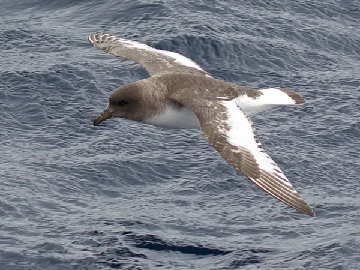

Los petreles (patines) son una familia de aves marinas pelágicas del orden de las Procellariiformes que agrupa a las pardelas, fardelas, abatros marinos, fulmares y patos petreles. Forman un grupo de aves propias de los mares fríos, estrechamente emparentadas con los albatros, paíños y potoyuncos. La distribución natural de los petreles, y sobre todo del petrel gigante antártico (Macronectes giganteus), es bien extensa, comprendiendo todos los mares del hemisferio sur, desde las costas de la Antártida hasta el trópico de Capricornio.
Es la familia más numerosa dentro del orden de las Procellariiformes, llamadas antiguamente tubinares. El rango de tamaños va, desde el abanto marino antártico, que es casi tan grande como un albatros (aproximadamente 3,50 m de envergadura), hasta el petrel paloma chico, tan pequeño como el más grande de los paíños. Se alimentan de peces, calamares y crustáceos, a quienes cazan volando a muy baja altura del agua, casi rozándola, con el fin de lanzarse con más facilidad sobre su presa. Todas las especies de esta familia son aves que viajan largas distancias; muchas de ellas emprenden migraciones trans-ecuatoriales. Crían en colonias, formando parejas monógamas y anidando año tras año en el mismo lugar. Todas las especies ponen un solo huevo por época de cría. Su periodo de incubación y de crecimiento de la cría hasta que puede emprender el vuelo es excepcionalmente largo, comparado con otras aves.
Muchas especies de esta familia, en época de cría, forman poblaciones que alcanzan varios millones de parejas; en cambio otras no juntan a más de 200 aves. Tradicionalmente los humanos han explotado muchas especies de fulmares y pardelas para obtener comida, combustible y cebo, una práctica que hoy continúa en una manera controlada. Muchas especies se ven amenazadas por especies introducidas que atacan a los adultos y a los polluelos en las colonias de crías, así como por la pesca con palangre, ya que los adultos acuden a comer los cebos y quedan atrapados.
La mayoría de las especies se alimentan en la superficie, obteniendo alimento que ha sido empujado a la superficie por otro depredador o alguna corriente, o simplemente flota a al deriva como cadáver. Otra forma de obtener alimento es sumergiéndose, tal como lo suelen hacer, principalmente, las fardelas, que se lanzan en vuelo hacia las profundidades. Aquellos que se alimentan en la superficie dependen de que su propia presa esté cerca de la superficie, y por esta razón las procelláridas algunas veces se encuentran en asociación con otros predadores o convergencias oceánicas. Estudios han demostrado una fuerte asociación entre diversos tipos de aves marinas, incluyendo a la Pardela Pacífica con delfines y atunes, los que empujan la presa hacia la superficie.
Los petreles fulmares no hacen distinción al momento de alimentarse de peces y crustáceos. Los petreles gigantes, en lo que es una excepción dentro de los Procellariiformes, se alimenta en tierra, comiendo muchas veces carroña de otras aves marinas y focas. Pueden también atacar los polluelos de otras aves. La dieta de los petreles gigantes varía de acuerdo al sexo, ya que las hembras comen más kril y los machos más carroña. Todos los petreles fulmares están acostumbrados a alimentarse de los desechos de los barcos de pesca, un hábito que ha implicado (pero no se ha demostrado la causa) la expansión del rango de hábitat del fulmar boreal en el Atlántico.